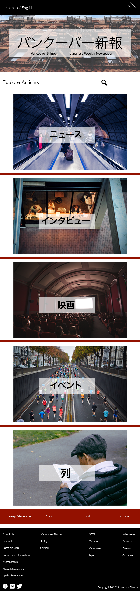

This is what will appear when you open the home page of the website.
This is what will appear when you open a specific article on the website. Recent and similar articles will be linked below, and arrows will bring you to recent articles as well (in chronological order).
To condense the number of tabs a drop-down menu will be used. This is an example of what the menu would look like if you were to hover over the news item tab. If you hover over one of the drop-down tabs the letters will turn red to indicate that it is a link.
This is what will appear when you open the home page of the mobile design. The layout is condensed for easy scrolling.
